Dramatic Escalation: FIFA World Cup Qatar 2022's Unforgettable Knockout Journey
The FIFA World Cup Qatar 2022 has transitioned into its knockout phase, marking a pivotal juncture in the tournament's narrative. The 16th round showcased the tournament's trademark unpredictability, with underdogs challenging traditional powerhouses in thrilling do-or-die encounters. The quarterfinals intensified the stakes, narrowing the field to eight teams, each showcasing determination and skill in pursuit of the elusive trophy. As we transition into the semifinals, the journey unfolds with star players taking center stage and tactical masterstrokes shaping the destiny of nations. From unexpected twists to breathtaking moments, the world watches with bated breath as the tournament edges closer to crowning a new footballing champion on the grandest stage of them all.
The Grand Culmination: Argentina vs. France : A Pinnacle Clash in FIFA World Cup Qatar 2022 Final
As the exhilarating journey of the FIFA World Cup Qatar 2022 draws to a close, the grand finale looms on the horizon, promising football fans a spectacle of epic proportions. The culmination of weeks of intense competition, dramatic upsets, and extraordinary displays of skill, the final match between Argentina and France is set to etch itself into the annals of football history. In this article, we embark on a journey to preview the highly anticipated showdown that will determine the next world champion.
Argentina, with its rich footballing legacy and a squad brimming with talent, faces off against France, the defending champions and a formidable force in international football. The clash between these two footballing giants sets the stage for a battle of skill, strategy, and sheer determination. As Lionel Messi leads Argentina's charge, aiming to secure a crowning achievement in his illustrious career, France, under the leadership of key figures like Kylian Mbappé, seeks to defend their title with unwavering resolve.
The path to the final has been paved with memorable moments, unforeseen twists, and remarkable feats of athleticism. Both teams have overcome formidable opponents, displaying resilience and flair on their journey to the summit. Now, the world awaits with bated breath to witness the drama unfold in the grand finale, where legacies will be defined, and a new chapter in footballing history will be written.
Join us as we delve into the anticipation, the narratives, and the excitement surrounding the FIFA World Cup Qatar 2022 Final. The clash between Argentina and France promises to be a fitting climax to a tournament that has captivated hearts and united nations in celebration of the beautiful game. As the world focuses its gaze on the pinnacle of footballing excellence, the stage is set for a grand showdown that will be remembered for generations to come.
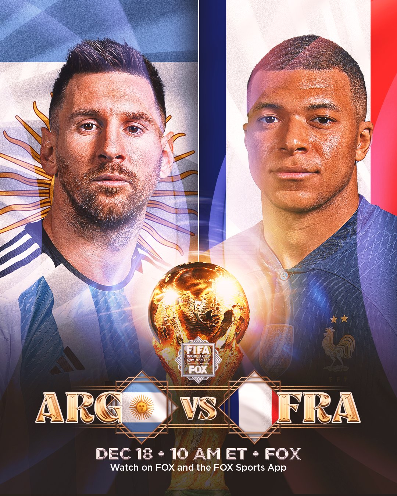


 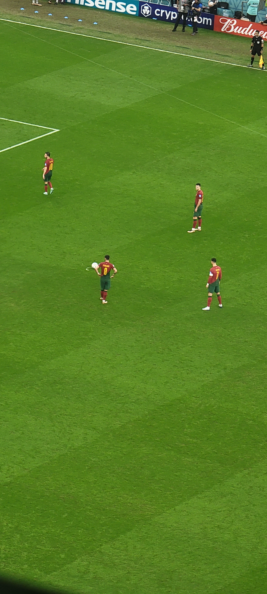
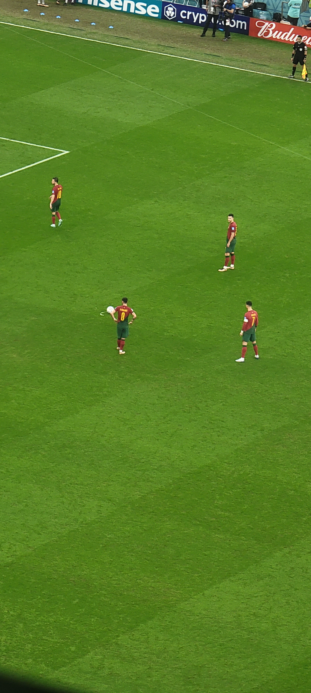
 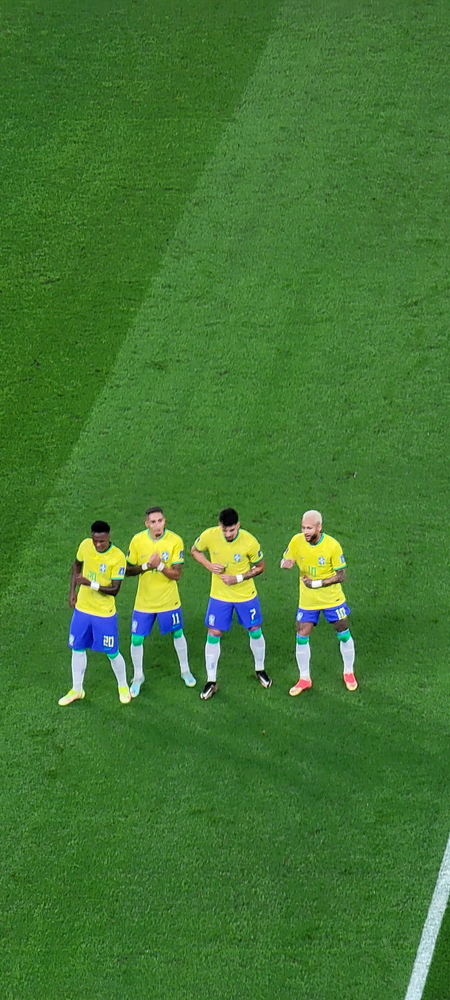
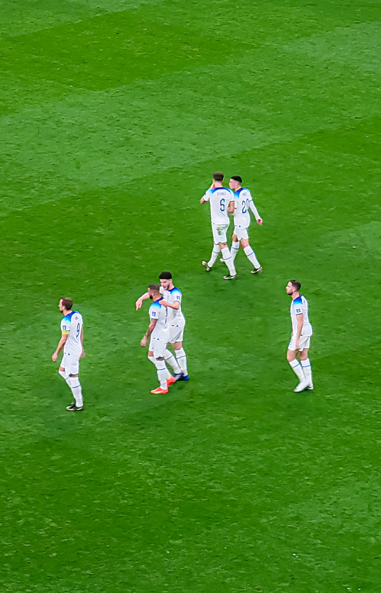
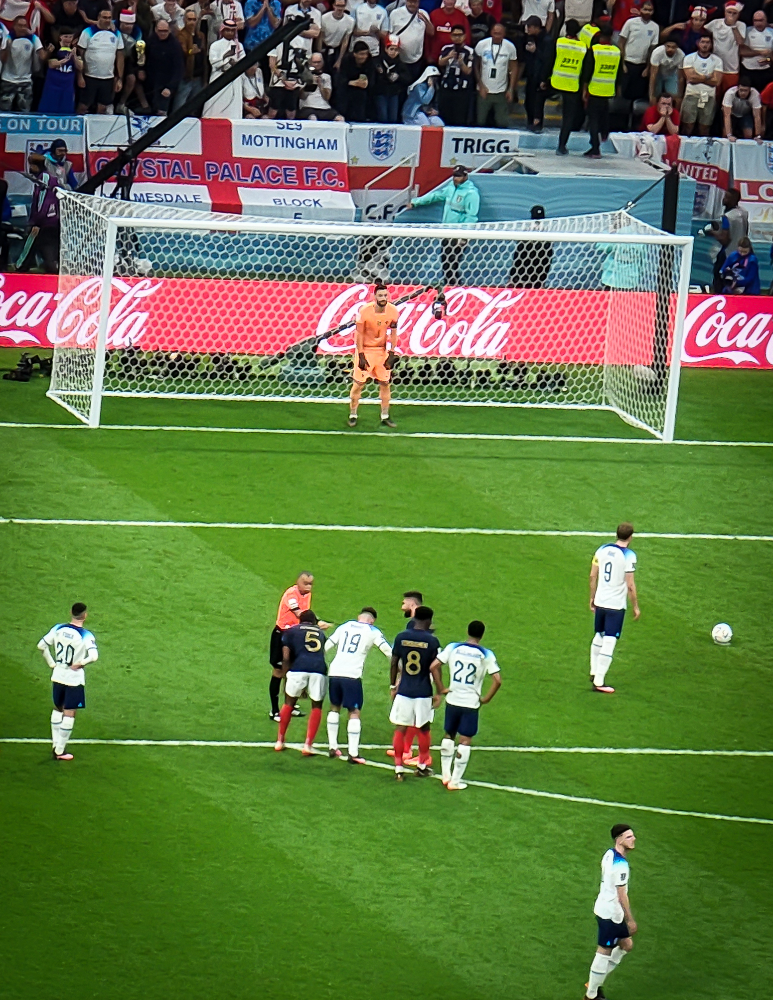
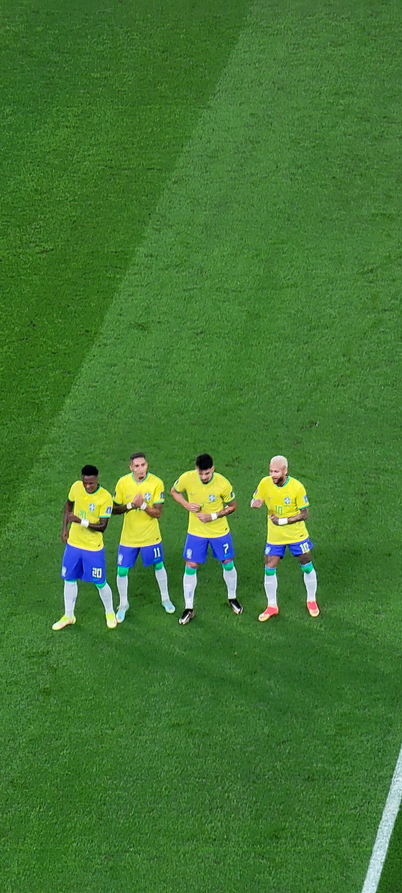
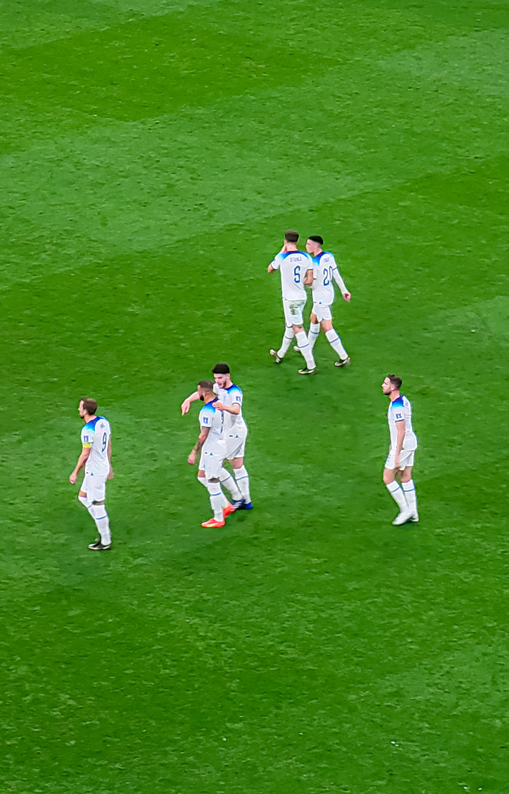
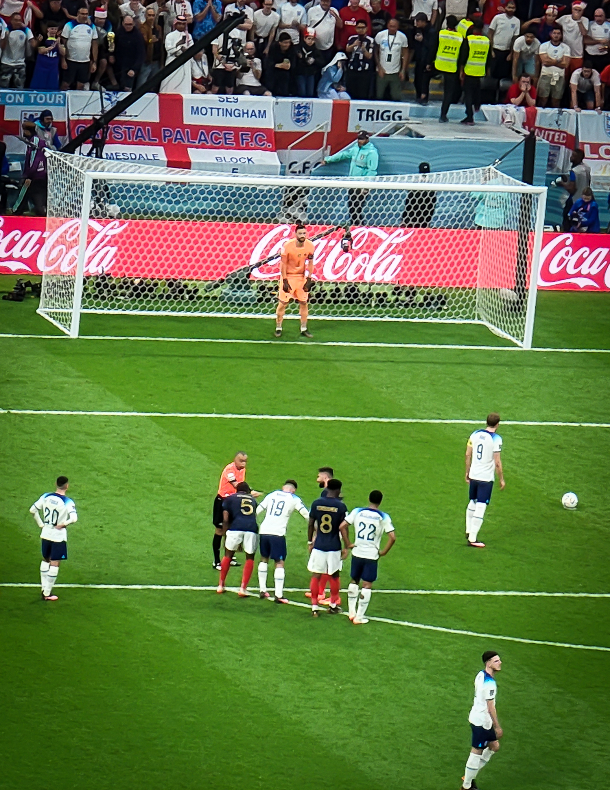
 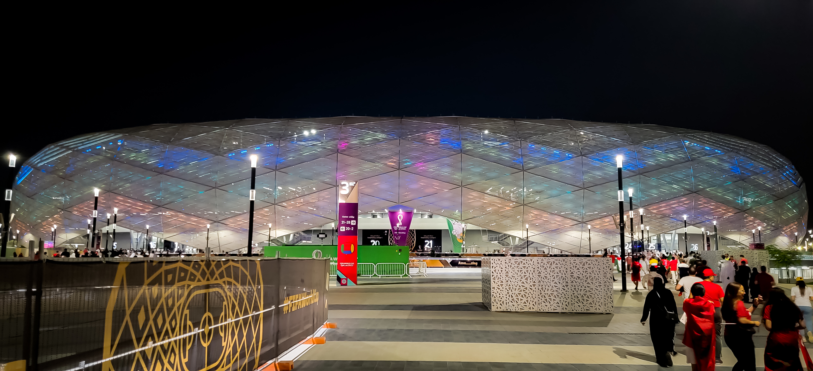
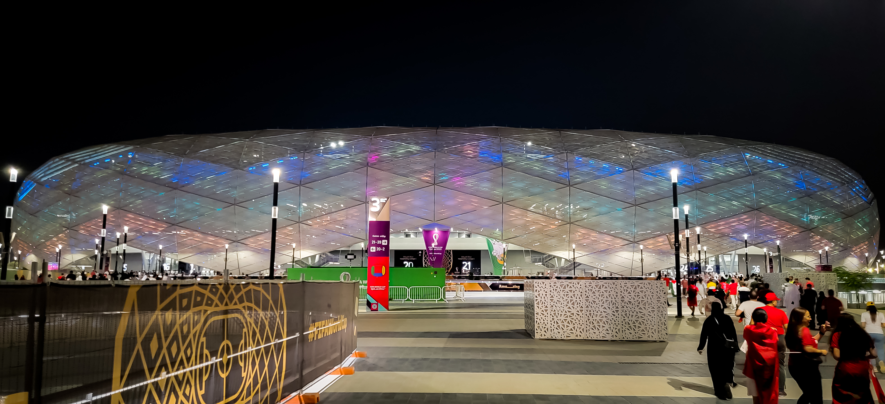